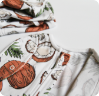
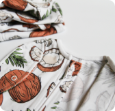

Пелёнка-кокон "Авокадо"
890 ₽
Размер:
Рекомендуемый возраст:
от 0 до 6 месяцев
Состав:
100% хлопок (Интерлок)
Наши пеленальные коконы созданы для тех, кто ценит качество и комфорт. Пеленальный кокон на двухзамковой молнии сшит из сертифицированного трикотажного хлопка высшей категории качества. Потайные швы не потревожат нежную кожу малыша, а трикотаж не вызовет аллергии.
Многие мамы уже оценили пеленальные коконы и знают, на сколько это комфортная и удобная альтернатива пеленанию. Пройма пелёнки открывается, чтобы освободить ручки малыша и сохраняет физиологическое положение тела, позволяя ручкам и ножкам расправляться постепенно и естественно.
Обеспечивается отличная воздухопроницаемость, кожа дышит даже в жару.
Малышу уютно. В пелёнке прекрасно спится - мягкая бесшовная изнанка, не давит и не тянет. Кокон создаёт обволакивающую среду, к которой малыш привык во время его ожидания. Движения ребенка ограничены до той степени, при которой он не навредит себе и не проснется.
Удобно маме и папе. Надеть пелёнку очень легко, подгузник меняется без лишних движений. Папа легко справится ;) Можно носить и дома, и на прогулке в коляске.